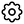
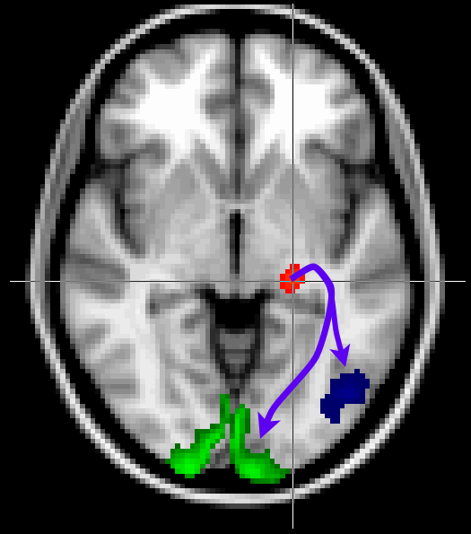

In this practical you are going to run tractography using FSL's probtrackX.
We will first take a look at the ouput of bedpostX,
which estimates the fibre orientations (with uncertainties) in each voxel.
ProbtrackX will use these to reconstruct white matter tracts
or to estimate the connectivity between gray matter regions.
We will use the latter to segment the thalamus.
Here we will only consider a single subject.
For multiple subjects you would typically repeat the same bedpostX and probtrackX
calls for every subject before comparing the results across subjects.
bedpostxcd ~/fsl_course_data/fdt2/diffusion ls
This is what an input directory to bedpostx looks like.
It contains the cleaned, aligned diffusion data from topup and eddy
(data.nii.gz) as well as a brain mask (nodif_brain_mask.nii.gz) and text files
with the b-values (bvals) and gradient orientations (bvecs) for each volume in the data.
It is possible to run bedpostx from either the FDT GUI or
via the command line. Before you run it you need to have a directory setup
that contains data files with standard names, such as this one. You can find a description of this structure in
the FDT User Guide on the FSL Wiki.
We will not run bedpostX here as it takes too long.
If you wanted to run it you would move up one directory (to ~/fsl_course_data/fdt2)
and run bedpostX diffusion (don't do this).
This would take the diffusion data in the diffusion directory (that we just looked at)
and produce a new directory diffusion.bedpostX that contains
the results from bedpostX.
As bedpostX takes several hours to run (unless you run it on a GPU),
it has already been run for you. Let's take a look at the output.
cd ~/fsl_course_data/fdt2/diffusion.bedpostX ls
Some of these files (bvals, bvecs, and nodif_brain_mask.nii.gz)
are copies from the input directory.
The outputs useful for visualisation are the mean_*.nii.gz files that contain
the average values for all the bedpostX parameters (the individual samples from the distribution
are stored in merged_*.nii.gz files that will be used in the probabilistic tractography, but are
not useful for visualization).
In addition to the mean parameters bedpostX also estimates the mean fibre orientation
for each crossing fibre (dyads*.nii.gz).
Let's first have a look at only the first fibre population.
Open mean_f1samples in FSLeyes.
This is the mean of the signal contribution of the first stick in the partial volume model -
it should look very similar to the FA map you saw in the dtifit practical.
Add dyads1, then open the overlay display panel
() and change the Overlay data
type to 3-direction vector image (Line). This is the mean of the
distribution of fibre orientations - it should look very similar to
the dti_V1 from the previous practical. You might have to zoom in to get a clear image of the fibre orientation estimates.
Let's add the crossing fibres now.
Add mean_f2samples, mean_f3samples,
dyads2 and dyads3 to your image.
Just like mean_f1samples tells you the estimated
proportion of the diffusion signal that can be accounted for by the first
fibre orientation, mean_f2samples
and mean_f3samples tell you the same for the second
and third orientations.
To have a closer look at the mean_f[1-3]samples files,
turn off all the dyads (dyads1, dyads2, and
dyads3).
Then change mean_f2samples and mean_f3samples to use
different colour maps. Threshold both of them at 0.05 (that is, set the minimum value
in the display range to 0.05 - we will not actually threshold/change the data,
just the display).
You should see that in much of the white matter, there are at least two fibre populations, but that in non-white matter tissue, the second and third fibres have very small volume fraction (e.g., <10-6). This is due to the ARD (automatic relevance determination, part of the Bayesian analysis of the crossing fibres). Notice that in some white matter regions where a single coherent orientation is expected (e.g., corpus callosum), the second and third volume fractions are also very small.
Now turn back on dyads1, dyads2
and dyads3 and display them as line vectors
( -> Overlay data type ->
3-direction vector image (Line)). Change the X, Y,
and Z Colour to red for dyads1, to green
for dyads2 and to blue for dyads3. You will note
that there are green and blue lines everywhere (even where there is no
evidence for a second fibre in mean_f2samples), but you should
notice the green and blue lines are well ordered in the regions where 3 fibres
are supported (where mean_f2samples
and mean_f3samples survive the threshold), but random elsewhere.
In the bedpostx folder, there are two images called
dyads2_thr0.05 and dyads3_thr0.05. These contain
average orientations only in those voxels where 2 or 3 fibres are supported
(i.e., their partial volumes are > 0.05). You can change the
threshold by using the maskdyads command in your shell.
Reopen FSLeyes with this command:
fsleyes mean_fsumsamples.nii.gz \ dyads1.nii.gz -ot linevector -xc 1 0 0 -yc 1 0 0 -zc 1 0 0 -lw 2 \ dyads2_thr0.05.nii.gz -ot linevector -xc 0 1 0 -yc 0 1 0 -zc 0 1 0 -lw 2 \ dyads3_thr0.05.nii.gz -ot linevector -xc 0 0 1 -yc 0 0 1 -zc 0 0 1 -lw 2
You should now be able to see some beautiful crossing fibre
architecture! The background image mean_fsumsamples is
the total volume fraction of all three sticks.
Here we are going to look at the simplest form of tractography, where we track from a single seed voxel. We will show how we can define the seed in different spaces, as long as we know the transformation from the seed space to the diffusion space.
Before we start tractography let's leave the bedpostX directory:
cd ~/fsl_course_data/fdt2
Here we will attempt to identify the tracts running through the internal capsule,
which is dominated by the cortico-spinal tracts.
In FSLeyes, open the diffusion.bedpostX/mean_fsumsamples map again. Find the
co-ordinates of a voxel in the internal capsule (the white matter tract shown
in the picture; running between the caudate/thalamus and the putamen/pallidum).
Bring up Fdt - it should default
to PROBTRACKX with single voxel as the selected seed mode.
Select diffusion.bedpostX as the Bedpostx directory
and enter your selected voxel as the seed.
Choose an output name (e.g., internal_capsule), and press Go.
After the tractography has finished run ls.
Note that a new directory has been created with the chosen output name.
Check the contents of this directory (ls internal_capsule).
One useful file is probtrackx.log, which contains the probtrackx command
that was run to produce this directory. This file is useful as a reminder later on,
but can also be used to, for example, run the same tractography on multiple subjects.
The main output file will be named basename_X_Y_Z.nii.gz, where
basename is the same name as the directory and X,
Y, and Z encode the seed voxel.
This file contains for each voxel a count of how many of the streamlines intersected with that voxel.
Back in FSLeyes, add this file and change the colour map to Red-Yellow.
Adjust the min and max display thresholds until you get a good view of the main tract.
Note the narrowness of the spatial distribution of the tractography results
- this is because there is very low uncertainty in the internal capsule.
Seed points can also be specified in a space different from the native diffusion one. Here we will again run tractography from a single seed voxel, but this time using a seed defined on the subject's T1-weighted image rather than in diffusion space
Open structural/struct_brain in a new FSLeyes window and
find an interesting seed location (e.g. in the corpus callosum).
In addition to the steps above (i.e., enter the input bedpostX directory,
enter the seed voxel, and set an output name) we now also need to define
the transformation between diffusion space and the space in which the seed is defined.
In the Fdt GUI, select seed space is not diffusion.
This should bring up two new fields, allowing you to specify the seed space:
epi_reg.
epi_reg can register a b0 or FA map to a T1-weighted image using boundary-based
registration (BBR). This produces the diffusion to structural transform, as you want to opposite
transform you will have to invert this transform using convert_xfm.
When you run epi_reg on your diffusion data, don't provide any fieldmap as you would
for functional data, because the diffusion data has (hopefully) already been
distortion-corrected using topup and eddy.
structural/xfms directory (the file is called
str2diff.mat).structural/struct_brain).
Run this tractography and load the output (basename_X_Y_Z)
into FSLeyes on top of the structural image (note that the output from
probtrackX is always in the same space as the seed).
For seeds defined in standard space (e.g., from some atlas), we have an additional
complication that we now need to specify a non-linear rather than linear
transformation. To test this open structural/standard_brain in FSLeyes
and find an interesting seed location.
You can specify a non-linear transform in the Fdt GUI
by ticking the nonlinear checkbox
and setting structural/xfms/standard2diff_warp and
structural/xfms/diff2standard_warp as transforms and
structural/standard_brain as a reference image.
Note that the tractography output maps will be in standard space.
How would you compute the warps to standard space if they had not
already been provided for you?
Answer.
Don't forget to select the bedpostX directory, enter the new seed voxel coordinates and set a name for the output directory. Then run the tractography and overlay the results on top of the standard image (with a different color map).
Seed masks are often defined in standard space rather than subject-specific space,
so that the same mask can be used across many subjects.
It is best practice in probtrackX to provide the transforms to standard space
to probtrackX rather than the transforming the masks to diffusion space (as
the latter will smooth the masks).
cd ~/fsl_course_data/fdt2
Here we will look at a more realistic example of tractography, where we do not seed from a single voxel, but rather from a mask. We will also use other masks to guide our tractography to reconstruct the optic radiation, which connects the lateral geniculate nucleus (LGN) of the thalamus to the primary visual cortex (V1).

The masks have been pregenerated for you in the masks directory.
Run tractography from the LGN mask (file called
masks/seed_LGN_left.nii.gz). You will need to change the seed mode from
single voxel to single mask. Note that this mask is in
standard space, so we have to use the warp fields between standard space and diffusion space as in the example above (i.e., select Seed space is not diffusion, select nonlinear and set the appropriate transforms from the structural/xfms directory). You may
want to reduce the number of samples to 500 to speed up tractography (under
the Options tab).
Set the output name to optic_radiation_no_waypoint and press Go.
Keep the Fdt GUI open. Now add V1 as a waypoint mask
(masks/target_V1_left.nii.gz) to
isolate only those tracts that reach V1. Use this V1 mask also as
a termination mask to avoid tracts that reach V1 and then continue to
other parts of the brain. Run tractography with these masks under the output name
optic_radiation_with_waypoint.
When running from a mask the output directories contain slightly different files.
The streamline density map is now called fdt_paths.nii.gz.
There is now also a file called waytotal that contains the total number
of valid streamlines run. This total should be much lower in the run with V1
as a waypoint mask as all the streamlines that did not reach V1 are now considered invalid.
You can check the output of both runs with:
fsleyes structural/standard_brain \
optic_radiation_no_waypoint/fdt_paths -cm blue-lightblue \
optic_radiation_with_waypoint/fdt_paths -cm red-yellow &
Find the optic radiation. Note that the results from the run with waypoints (in red) is much cleaner than the run without (in blue).
Rather than defining all necessary seed, waypoint, and exclusion masks yourself, you can
also use Autoptx (download from here).
This tool reconstructs a large number of tracts based on seed, exclusion, and waypoint
masks defined in standard space. The script will also run bedpostX for you
and register the diffusion data to standard space.
Above we recreated known white matter tracts by guiding the streamlines using masks. Here we will look at estimating the connectivity between brain matter regions by counting the number of streamlines connecting them. Whenever, you work with these streamline counts keep in mind what we are actually measuring is the robustness of that connection against noise, which will be affected by confounds such as tract length or the presence of crossing fibres. Connectivity analysis will also be affected by false positive streamlines (i.e., streamlines that follow a path through the brain that does not match a true underlying tract).
Here the goal is to measure the connectivity between N regions of interest. In the Fdt GUI this can be set up by:
diffusion.bedpostX.Seed space to multiple masks and add any ROIs you want to include to the
Masks list (you can use any masks defined in the masks directory
or create your own in standard space using for example the atlases included in FSL).structural/xfms).Options tab) to speed up the evaluation. In reality you will not want such a low number of streamlines only to test some probtrackX command, not for any serious analysis.Go.
The output directory still contains an image fdt_paths.nii.gz which shows the path
of the streamlines between the ROIs, but the main output for this analysis is the file
fdt_network_matrix. Run cat on this text file to see its contents.
The file contains an NxN matrix quantifying the number of streamlines between the selected ROIs that
can be compared across subjects.
Running such an analysis would typically require creating custom python or matlab scripts.
In this analysis we simply add up the streamlines connecting with any voxel in the region of interest. To be able to segment a region of interest, we need to consider the connectivities from individual voxels within each ROI. In the following sub-sections we will explore two ways of doing so.
Here we will segment the thalamus based on the connectivity with the cortex. To do this we will need to estimate for every voxel in the thalamus how strongly it is connected with a number of pre-defined ROIs in the cortex.
Let's first have a look at out input masks:
fsleyes structural/standard_brain.nii.gz \
masks/seed_thal_right.nii.gz \
masks/cortex_*_right.nii.gz &
Ensure that all the masks have different colours, so that you can distinguish them.
seed_thal_right is the seed mask and should cover the right thalamus. From each voxel
in this mask we are going to measure the number of streamlines connecting to the cortical regions, which
are defined by the other masks. To run this analysis, in the Fdt GUI:
diffusion.bedpostX.Seed space to single mask and set this mask to masks/seed_thal_right.mask/cortex_*_right files).Options tab) to speed up the evaluation.Go.
The objective of this type of analysis is to ask the following
question: For each location in the seed mask, what is the relative
probability of connection to each of my target masks? The output is
therefore a single image for each target mask in which only voxels within the
seed mask contain data. At each voxel within the seed mask the voxel value is
the number of streamlines which reached this target mask from this seed
voxel. These outputs can be found in the output directory as the
seeds_to_* files. Unfortunately, 10 streamlines is not enough
to get a reliable segmentation of the cortex, so we ran for you the
same tractography with 2000 streamlines per voxel, which is available
as the THAL2CTX_right directory.
Now overlay in FSLeyes, in turn, each of the seeds_to_* files
in THAL2CTX_right. Compare the spatial distributions and
probabilities of connection from different thalamic voxels to different
cortical target zones. Do you see any overlap between connectivity
probabilities of the different targets in the seed region? What do you
think this means?
Answer.
Run find_the_biggest on the outputs of seeds to
targets to generate a hard segmentation of the thalamus and overlay
this segmentation onto the standard brain. Something like:
find_the_biggest THAL2CTX_right/seeds_to_* biggest_segmentation
The different numbers in the output image
(biggest_segmentation) each relate to a different target
mask. You may want to change the colour map to something like
Random.
In both cases above the connectivity from the seed region was measured based on known regions of interest. For some applications, a more precise measure of connectivity might be needed, where we consider which voxels within one ROI connect with which voxels in another ROI. If both ROIs cover the complete gray matter region the resulting matrix will contain the connectivity between each pair of gray matter voxels (i.e., a dense connectome).
In probtrackX there are three different options to generate such a connetome.
Which one you need will depend on whether you want
the ROIs between which you will calculate the dense connectome to also function as seed matrix
(matrix1 or matrix2) or whether you want a different seed mask (matrix3):
Here we will just run a simple example, which could be a first step in segmenting the thalamus in a more data-driven way than above. For this we will compute the connectivity between each voxel in the thalamus and each other voxel in the brain. In the Fdt GUI:
diffusion.bedpostXSeed space to single mask and set this mask to masks/seed_thal_rightMatrix2 option (in the Options tab
under Matrix options) and set the Tract space mask
to structural/standard_brain.
Options tab) to speed up the evaluationGo
Check the contents of the output directory using ls. A full matrix storing the connectivity
between each voxel in the thalamus with each voxel in the rest of the brain would be very big, so here
only a sparse representation is stored. In short, each voxel in the thalamus (i.e., the seed mask) is
assigned an index, which you can look up in the coords_for_fdt_matrix2 file. Similarly,
each output voxel is assigned an index, which you can look up in
tract_space_coords_for_fdt_matrix2 or in the image
lookup_tractspace_fdt_matrix2.nii.gz. Finally, the main output file
fdt_matrix2.dot contains in each row the number of streamlines (last column) connecting
a voxel in the thalamus (first column) with a voxel in the rest of the brain (second column).
This output gives us for each voxel in the thalamus the connectivity "fingerprint" with the rest of the brain. As could be seen in the lecture for the medial frontal cortex, this fingerprint can be used to segment the region by clustering these connectivity "fingerprints". This analysis would again require custom matlab or python code and is hence beyond the scope of this practical.
If you have made it through the practical so far, you have explored many of the different ways to run
tractography in probtrackX. Congratulations! You can now continue with the more
advanced topics below or if you prefer you can continue exploring the options above by
reconstructing different white matter tracts or computing the connectivity profile
of your favorite brain region.
cd ~/fsl_course_data/fdt2
In this section we will see how the choice of the bedpostx model can affect the fitting results.
We will compare model 1 (ball & sticks, single diffusion coefficient) to model 2 (ball and sticks, continuous gamma distribution of diffusion coefficients) on our multi-shell data.
Model 2 should be better suited to deal with multi-shell data, as the apparent diffusion coefficient can change with the b-value. Using model 2 tends to reduce overfitting (i.e., spurious fibre orientations).
Open FSLeyes by typing the following command in your terminal:
fsleyes \
diffusion.bedpostX/mean_fsumsamples.nii.gz -or 0 0.8 \
diffusion_model1.bedpostX/mean_f2samples.nii.gz \
-cm blue-lightblue -or 0.05 0.2 \
diffusion.bedpostX/mean_f2samples.nii.gz \
-cm red-yellow -or 0.05 0.2 \
diffusion_model1.bedpostX/dyads1.nii.gz \
-ot linevector -xc 0 0 0 -yc 0 0 0 -zc 0 0 0 -lw 2 \
diffusion_model1.bedpostX/dyads2_thr0.05.nii.gz \
-ot linevector -xc 1 1 1 -yc 1 1 1 -zc 1 1 1 -lw 2 &
This loads the fitted orientations using model 1 (single diffusion coefficient), as well as the volume fractions of the secondary fibre orientation for both models 1 and 2.
First, deselect the dyads files, and examine the volume fractions
(mean_f2samples). Model 1 should be displayed in Blue
and model 2 in Red-Yellow.
The first thing that is immediately visible is that many more voxels survive a 0.05 thresholding on the volume fractions of the secondary fibre when using model 1. This is particularly true at interfaces between grey/white/CSF tissues, where partial volume is likely to occur, and it indicates that the model is overfitting the data.
Now examine the dyads in the voxels where a secondary fibre is estimated when using model 1 but not model 2 (i.e., the blue voxels). You can observe that in most of them, especially in those closer to tissue boundaries (grey/white/CSF interface) the second dyad is perpendicular to the first one, but does not show spatial continuity when compared to neighbouring dyads.
Partial volume effects can cause the signal to decay non mono-exponentially when increasing the b-value. Since model 1 has a single diffusion coefficient, it can only capture this feature of the data by adding a perpendicular second dyad, which fits the data better but does not correspond to a genuine (anatomical) fibre orientation.
cd ~/fsl_course_data/fdt2/surfaces
All previous examples use volumetric seeds and constraint
masks. Probtrackx2 also supports surface files (e.g., generated
using FreeSurfer or
Caret).
In this example use of surfaces, we consider the case where FreeSurfer has
been used to generate a cortical surface, and show how such surface can be
used in probtrackx2.
In the current folder you will find the high-resolution T1-weighted volume
produced by the FreeSurfer recon-all command
(orig.nii.gz), the necessary transformation matrices to go from
FreeSurfer anatomical space to diffusion space and the white/grey matter
boundary surfaces for the left (lh.cortex.gii) and right
(rh.cortex.gii) hemispheres. For details on how to generate these
files, see the relevant
documentation.
Here, we will see an example where, in order to avoid spurious connections
that connect adjacent gyri, we impose the convoluted WM/GM boundary surface as
a termination mask. Tracking will be performed again in anatomical space as
defined by the orig.nii.gz volume. We will first run an example
without any surface constraints from a seed close to the cortex.
The command:
echo "97 96 125" > svox.txt
creates a text file called svox.txt that contains the string 97 96 125. This could also be created using your preferred "plain" text editor.
In your terminal type:
echo "97 96 125" > svox.txt probtrackx2 \ --samples=../diffusion.bedpostX/merged \ --mask=../diffusion.bedpostX/nodif_brain_mask.nii.gz \ -x svox.txt \ --xfm=freesurfer2fa.mat --seedref=orig.nii.gz \ --loopcheck --simple --forcedir \ --opd -V 1 --dir=Tracts --out=no_surf
The next commands will include as termination masks the wm/gm boundaries of both hemispheres:
echo lh.cortex.gii > stop.txt echo rh.cortex.gii >> stop.txt probtrackx2 \ --samples=../diffusion.bedpostX/merged \ --mask=../diffusion.bedpostX/nodif_brain_mask.nii.gz \ -x svox.txt \ --xfm=freesurfer2fa.mat --seedref=orig.nii.gz \ --loopcheck --simple --forcedir --opd -V 1 \ --dir=Tracts --out=surf --meshspace=freesurfer --stop=stop.txt
After the results have been computed, open FSLeyes with the following command:
fsleyes -ds world \ orig.nii.gz rh.cort.nii.gz -cm green \ lh.cort.nii.gz -cm copper \ Tracts/no_surf_97_96_125 -cm blue-lightblue -or 10 1000 \ Tracts/surf_97_96_125 -cm red-yellow -or 10 1000
This loads the tractography results overlaid on top of the high-resolution anatomical volume together with the surface boundaries. The results obtained when using the surfaces as termination masks should be displayed in red-yellow and those obtained without surface contraints should be in blue-lightblue.
Go to slice Y=91. Observe how, when surfaces are not used as
termination masks, the tracts in blue wrongly connect two adjacent gyri by
passing through a sulcus.
The End.